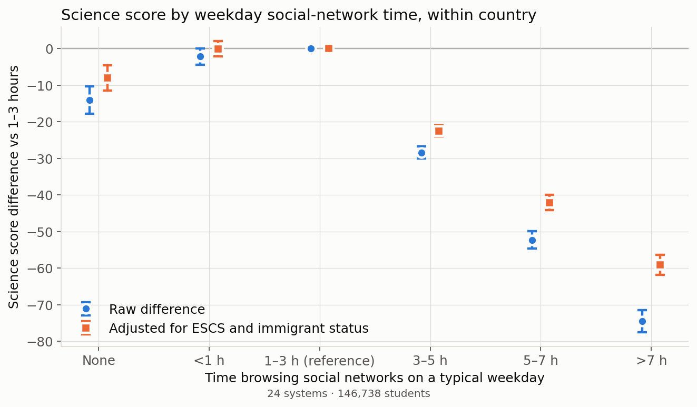
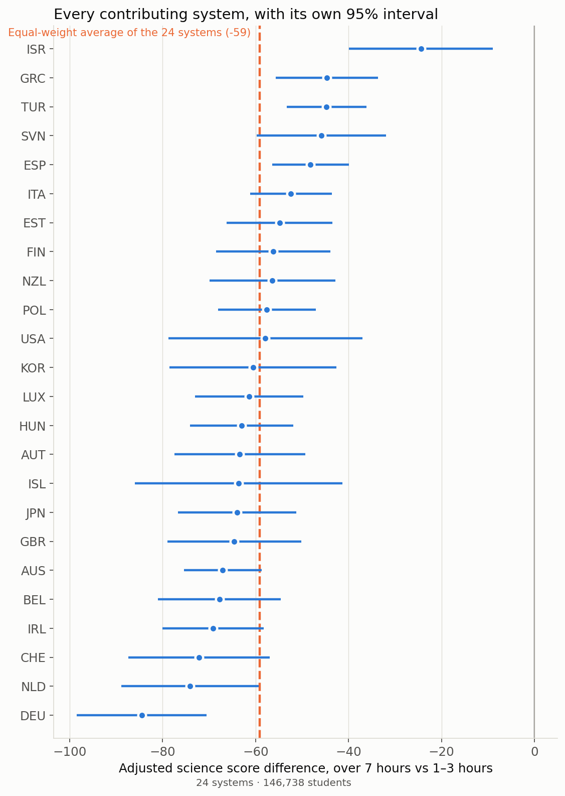
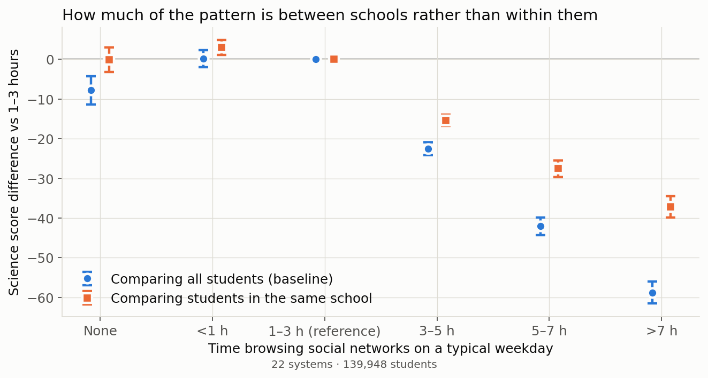
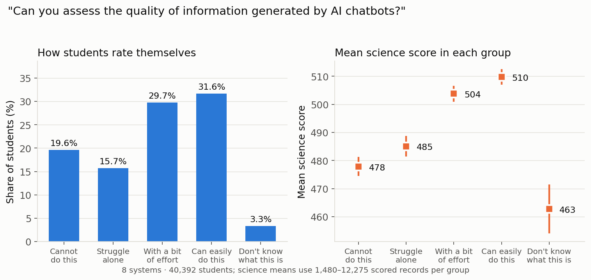
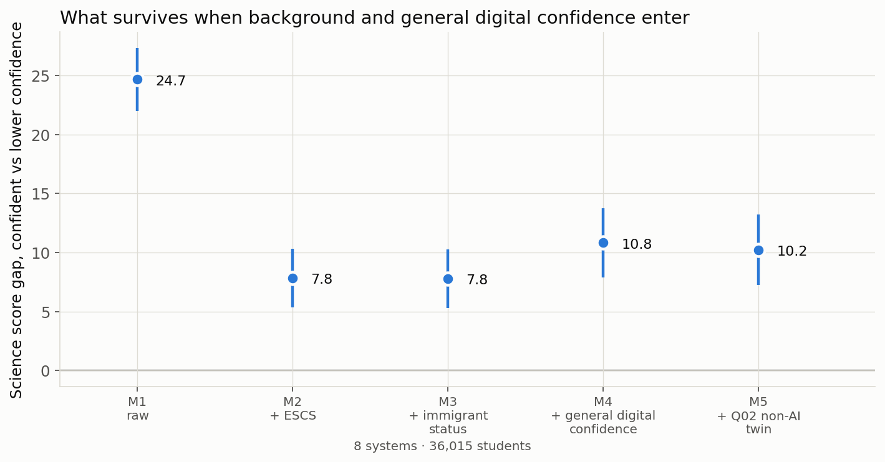

Screens, AI Confidence and Student Achievement: What PISA 2025 Can — and Cannot — Tell Us
Students who report spending more than seven hours a day browsing social networks on a typical weekday score 59 points (95% CI 56 to 62) below students reporting one to three hours, comparing students within the same education system and adjusting for family background. Comparing students within the same school, that difference falls to 37 points (95% CI 35 to 40). Self-rated confidence at judging AI chatbot output looks like a large achievement advantage — 24.7 points (95% CI 22.0 to 27.4) — that shrinks to 7.8 points (95% CI 5.3 to 10.3) once family background enters the model and settles at 10.2 points (95% CI 7.2 to 13.2) when general digital confidence and the non-AI twin item enter too. None of this is an effect of screens or of AI. It is what a single cross-sectional survey can and cannot show.
What this is, and what it is not
This is an independent analysis of the PISA 2025 public-use file. It is not peer reviewed, and it is not an OECD publication. Everything here is an association measured at one moment in time. No design in this data can tell you whether social media harms learning, whether struggling students retreat into their phones, or whether some third thing produces both. Where a result is compatible with several stories, this article says so rather than picking the most quotable one.
Three questions:
- How does weekday social-network time relate to science achievement inside a country,
and how much of that relation is family background?
- How much of it survives when students are compared with classmates at the same
school, rather than with students across the system?
- Does self-rated confidence at judging AI chatbot output measure something specific to
AI, or general self-assessment?
The data, and who is actually in it
PISA 2025 was released on 8 September 2026. The public-use student file holds 755,721 records across 90 education systems; PISA 2025 Results (Volume I) reports 91 countries and economies. That difference is stated here as an observed fact — this analysis did not establish its cause and does not invent one.
The full-file count is not the denominator for anything below. The social-network item sits in the ICT familiarity questionnaire, an instrument many systems did not administer and some administered to only part of their sample. The screen-time analysis therefore covers 146,738 students in 24 OECD systems. The AI items are narrower still: 36,015 students in 8 OECD systems. Every figure in this article carries its own sample and country set, and every table in the data package does too.
Coverage inside that set is uneven in ways worth stating plainly. Weighted valid response on the social-network item runs from 6.1% of released records in the United Kingdom to 96.2% in Korea. OECD separately warns that more than 40% of responding students in the United States were not administered the student questionnaire at all. Both facts are handled by sensitivity analyses below rather than by a footnote.
One limitation is structural. The public-use file collapses every non-substantive response — not administered, valid skip, invalid, no answer — into a single system-missing code. The value labels document five distinct categories; the released data carries none of them. It is therefore not possible in this file to separate a module a student was never given from a question a student declined to answer. Nothing here treats an absent module as a zero, and no country is described as not having administered an item.
Screen time and science
The estimand throughout is the equal-weight average of estimates computed separately inside each participating system — the same construction OECD uses for its own averages. Uncertainty combines Fay replicate sampling variance with plausible-value imputation variance, formed within each country first and then combined across countries as independent designs. Intervals are approximate 95% intervals and describe sampling and imputation uncertainty for the systems included, not a random draw from some universe of countries.


The raw difference between the heaviest-use band and the reference is 74 points (95% CI 72 to 77). Adjusting for economic, social and cultural status and immigrant status on exactly the same students leaves 59 points (95% CI 56 to 62). The change is 15.4 points (95% CI 14.2 to 16.6) — a paired difference computed inside the joint draws, so it carries its own uncertainty rather than being inferred from two separate standard errors.
Two features of the curve resist the simple reading. It is not monotonic: students reporting no social-network time at all also score below the one-to-three-hour group, by 8.1 points (95% CI 4.6 to 11.5). And the band just below the reference is flat — -0.1 points (95% CI -2.1 to 2.0), an interval that includes zero. There is no threshold in these data, no safe number of hours, and nothing that identifies a tipping point. The gradient is steepest at the top of the range: 42 points (95% CI 40 to 44) at five to seven hours against 59 points (95% CI 56 to 62) above seven.
The same result in every system


The direction is not carried by a few systems. All 24 OECD systems have a negative adjusted point estimate, and in all of them the individual interval excludes zero. The size varies substantially — the median is about 61 points, running from roughly 84 points in Germany to 24 in Israel. Leaving out any single system moves the average between about −58 and −61.
The sensitivities behave the same way. Excluding systems that carry an applicable official PISA 2025 sampling caution gives 59 points (95% CI 56 to 61) across 21 systems. Excluding systems whose weighted coverage on the exposure item falls below 60% of released records — a threshold fixed before any coefficient was estimated — gives 61 points (95% CI 58 to 63) across 21 systems. Adding a squared ESCS term moves the contrast by less than a fifth of a point. On the subset of systems that release student gender, adding gender to the model changes the heaviest-use contrast by 0.01 points, with an interval comfortably spanning zero.
How much of it is the school?
Adjusting for ESCS and immigrant status leaves untouched everything that differs between schools: intake, peers, resources, tracking, neighbourhood. The school-valid sample — 22 systems and 139,948 students, two systems excluded because they release no school identifier — allows the same contrast to be fitted comparing only students inside the same school, with the demeaning recomputed for every replicate weight.


On that sample the baseline contrast is 59 points (95% CI 56 to 62). Comparing students in the same school it is 37 points (95% CI 35 to 40) — a paired change of 22 points (95% CI 20 to 23). That change is the part of the contrast that travels with which school a student attends; the within-school fit removes it. It is a comparison of two fitted models on identical records, not a decomposition of the association into school and student causes.
This narrows the range of explanations; it does not close it. Students are not randomly assigned to schools, peer environments differ inside a school as well as between schools, and nothing here addresses the possibility that students who are struggling turn to their phones rather than the reverse. What the comparison does establish is that the association is not merely a restatement of which schools students attend.
The pattern replicates in the other two domains on identical records: 54 points (95% CI 51 to 57) in reading and 59 points (95% CI 56 to 61) in mathematics. These are reported side by side because they were computed, not because their difference was tested — it was not, and no domain should be described as more affected than another on this evidence.
AI confidence, AI use, and what they track
PISA 2025 asked students how well they can "assess the quality of information generated by Artificial Intelligence chatbots". The response scale runs from "I cannot do this" to "I can easily do this", with a fifth option: "I don't know what this is."


31.6% (95% CI 31.1 to 32.2) of students say they can easily do this. 3.3% (95% CI 3.1 to 3.5) say they do not know what this is — a small group, but one the earlier version of this analysis dropped entirely, and its position is informative: it has the lowest mean science score of any group, 463 (95% CI 454 to 472), below even the students who say they cannot assess AI output (478 (95% CI 475 to 481)). Whatever this item measures, it is not sitting on a clean ability scale with "don't know" at one end.
Now the harder question. Students who say they can assess AI output score 24.7 points (95% CI 22.0 to 27.4) above those who say they cannot.


Adding ESCS alone changes the coefficient by 16.8 points (95% CI 15.6 to 18.0), leaving 7.8 points (95% CI 5.3 to 10.3). Immigrant status adds essentially nothing. Adding a general digital-confidence index — the other eleven items in the same battery, excluding the non-AI twin — moves the coefficient up by 3.0 points (95% CI 1.5 to 4.6), a suppression pattern rather than the attenuation one might expect. After the non-AI twin item enters too, 10.2 points (95% CI 7.2 to 13.2) remains. Restricting to students who answered all eleven index items gives 9.8 points (95% CI 6.6 to 13.0), so this is adjustment rather than sample restriction.
The honest summary: the coefficient is 24.7 points (95% CI 22.0 to 27.4) with nothing else in the model, 7.8 points (95% CI 5.3 to 10.3) after ESCS alone, and 10.2 points (95% CI 7.2 to 13.2) after every control available here. Those are comparisons between nested models, and the changes they trace are adjustments — the models establish conditional associations, not how much of the gap family background or confidence causes. Whether the residual reflects anything specific to AI is not something this design can settle — the index is exploratory, not a validated scale, and none of these percentages is a causal decomposition.
What self-rated confidence clearly does track is background. 49% (95% CI 47 to 50) of students in the lowest ESCS quartile say they can assess AI output, against 77% (95% CI 76 to 78) in the highest — a gap of 28 percentage points (95% CI 27 to 30). ESCS is economic, social and cultural status, not household income, and these are quartiles of that index within each country. This is a gap in what students say about themselves. It is not a measured skill gap, and it should not be quoted as one.
Does using chatbots help the confident more?
A natural worry is that AI tools amplify existing advantage: that frequent use pays off for students who can already judge the output and not for those who cannot. The data allow a direct test. Among students answering both items, the interaction between weekly chatbot use for learning and self-rated confidence is -2.4 points (95% CI -7.5 to 2.7), and -1.5 points (95% CI -6.2 to 3.2) after background adjustment.
Both intervals include zero. There is no clear evidence of a difference in this sample — which is not the same as evidence that no difference exists, and the sample is small enough that a real interaction of moderate size would not reliably show up. The main effect is also modest: weekly use is associated with 8.7 points (95% CI 4.3 to 13.1) among lower-confidence students. That is an association between two things students reported about themselves. It is not points gained from using a chatbot.
Related work, and what is new here
That digital leisure time correlates negatively with achievement is well established; OECD's own Finite Time to Learn and Play covers the broader leisure question. The contribution here is narrower and more specific. The exposure is one item about weekday social-network browsing, not screen time in general or device ownership. Every estimate is computed inside a country and combined across independent designs, so nothing rests on pooling students across systems with different populations. The adjusted and unadjusted models share identical records. The within-school comparison separates school composition from within-school variation. And the AI section separates using chatbots from feeling able to judge them, which are routinely conflated.
What would change the conclusions
- Reverse direction. Students who are struggling may browse more. Nothing here distinguishes that from the opposite, and it is at least as plausible.
- Residual confounding. ESCS and immigrant status are two variables. The within-school comparison removes school-level confounders, not student-level ones.
- Measurement. Both exposures are self-reported time and self-rated ability. Both are known to be reported with error, and that error may itself correlate with achievement.
- Selection into the module. The ICT and AI instruments were not administered to everyone, and this file does not let nonadministration be separated from nonresponse. Who is missing is not established here.
- Multiplicity. This is an exploratory analysis with a specification frozen before estimation but after the data were inspected for coverage. It is not a preregistration, and the intervals are not corrected for the number of contrasts examined.
- Small country sets. The AI results rest on 8 OECD systems. They describe those systems, and they are not an OECD-wide finding.
Methods and data
The full analysis inventory, sample definitions, inference, coverage tables and the complete list of sensitivities are in the methods and appendix. Every aggregate table behind every number above is in the data downloads, including the claim ledger that maps each statement in this article to the generated result row it came from.
PISA microdata is not redistributed here. It is available from the OECD's PISA 2025 Database, which also publishes the questionnaires, the codebook and the recoding syntax for Volume I variables.
References
- OECD (2026), PISA 2025 Results (Volume I): Future-Ready Students. Reader's Guide, reporting approach and international averages. https://www.oecd.org/en/publications/pisa-2025-results-volume-i_73451bc5-en/full-report.html
- OECD, PISA 2025 Database — public-use files, questionnaires, codebook and compendia. https://www.oecd.org/en/data/datasets/pisa-2025-database.html
- OECD, How to prepare and analyse the PISA database. https://www.oecd.org/en/about/programmes/pisa/how-to-prepare-and-analyse-the-pisa-database.html
- OECD, Finite Time to Learn and Play — the broader digital-leisure analysis. https://www.oecd.org/en/publications/finite-time-to-learn-and-play_edbaa4bb-en/full-report.html